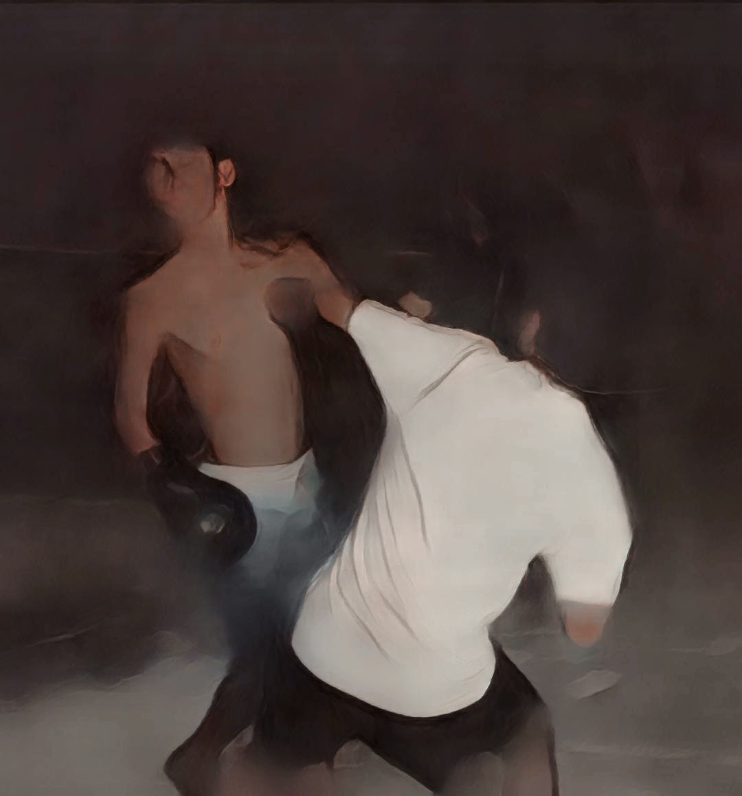

mga nigga ng onse
RIVAS ITASS
58 Bible Verses about War
‹›
Most Relevant Verses
Psalm 18:34
Verse Concepts
He trains my hands for battle,
So that my arms can bend a bow of bronze.
ADVERTISING
Exodus 15:3
Verse Concepts
“The Lord is a warrior;
The Lord is His name.
Psalm 144:1
Verse Concepts
A Psalm of David.
Blessed be the Lord, my rock,
Who trains my hands for war,
And my fingers for battle;
Psalm 24:8
Verse Concepts
Who is the King of glory?
The Lord strong and mighty,
The Lord mighty in battle.
Psalm 18:39
Verse Concepts
For You have girded me with strength for battle;
You have subdued under me those who rose up against me.
0 of 1 minute, 27 secondsVolume 0%
This ad will end in 18
Ecclesiastes 3:8
Verse Concepts
A time to love and a time to hate;
A time for war and a time for peace.
Luke 14:31
Verse Concepts
Or what king, when he sets out to meet another king in battle, will not first sit down and consider whether he is strong enough with ten thousand men to encounter the one coming against him with twenty thousand?
Source: https://bible.knowing-jesus.com/topics/War
credits to
john moy moy
john moymoy
kkiel morales
skylar vox
vasmat
idol macaranas/makaranas
makoy
niel magpale
boss akang
kirk z
wendell magpale
chummy
jeamer puke
makoy101
den den
tatay supring
makaveli
yung ibang hindi ko nalagay upadte ko nlng to awit gege
midnight bardagulan with friends

sir whales the rock face for extra content
la na akong maisip amp